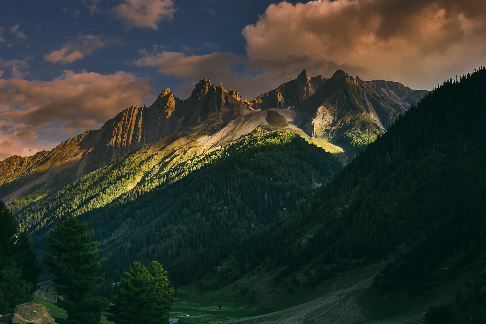
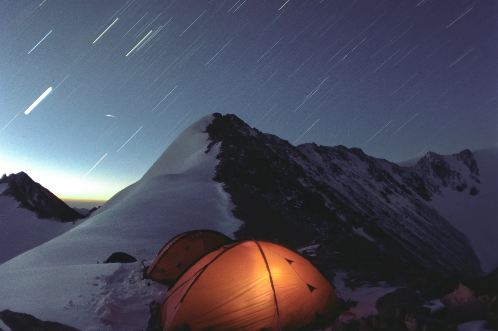

- Photos show a trek's best view; a 3D map shows the work: where the climb is, where you sleep and the way down.
- Use it to pick between treks that look similar on paper, and to know which day is hardest before you commit.
- It's for planning, not navigation: conditions change every season and the trail line is approximate.
Most people choose a Himalayan trek from photographs: a frozen lake, a summit at sunrise, tents under a starry sky. Photos are great at showing the reward. They're bad at showing the work: how long the climb is, where it gets steep, and whether tonight's camp sits in a sheltered meadow or on an open ridge.
A 3D map of the route fills that gap. Seeing the shape of the land before you go makes it easier to choose the right trek, set expectations, and enjoy the walk instead of being surprised by it.
What a 3D view shows that photos don't
1. Where the climbing actually happens
A trek's height on paper, say 3,810 m, tells you the top. It doesn't tell you whether you gain that height gently over four days or in one hard push. In 3D you can see the gradient day by day: long gentle forest sections, then the steep final ridge.
2. Where you'll sleep
Campsites in a forest clearing, beside a lake or on a bare shoulder of the mountain feel very different at night. Seeing each camp in its terrain tells you which nights will be sheltered and which will be exposed to wind and cold.
3. What's around you
Half the joy of a Himalayan trek is knowing which peak you're looking at. A 3D view places the big mountains on the horizon, so on the trail you'll recognise them instead of wondering.
4. The way down
Descents are where knees and tired legs suffer. Many treks come down by a different route than they go up. A 3D flythrough shows you that route too.

An example: Kedarkantha, day by day
Kedarkantha is often called a beginner's winter summit, and on paper it looks simple: 5 days, 3,810 m, graded easy–moderate. The 3D route shows how that splits up:
- Day 2: Sankri (about 1,950 m) to Juda ka Talab (2,773 m). About 4 km through forest, roughly 5 hours. A steady climb under trees.
- Day 3: up to Base Camp (3,413 m). About 4 km, roughly 3 hours, out of the forest into meadows and snow.
- Day 4, summit day: a 4 a.m. start for the last ~400 m to the top at sunrise. The angle steepens as the ridge narrows, and the final section is the hardest climbing of the trek. Then a long walk down to Hargaon (2,700 m).
A first-timer who sees this knows what to train for: not a gentle stroll, but one short, steep, cold pre-dawn push. That's useful to know before you commit.
Who gets the most out of it
- First-time trekkers deciding between two "easy" treks that feel very different underfoot. Compare them side by side, e.g. Kedarkantha vs Brahmatal.
- Families and groups checking whether everyone can manage the steepest day.
- Repeat trekkers choosing their first high pass, like Hampta Pass (4,200 m), and wanting to see how the crossing looks.
- Photographers who want to know where the open views are.

What a 3D map can't tell you
It's a planning tool, not a guarantee. It won't show:
- Conditions on your dates. Snow depth, weather and trail closures change every season. Check with your operator and the local forest department.
- Exact footpaths. On Treqz the trail line is traced from elevation data, OpenStreetMap and campsite altitudes. Treat it as approximate, never as a navigation map.
- Your fitness on the day. Altitude affects everyone differently. Read our guide to reading altitude gain before a high trek.
How to use Treqz to plan
- Pick a month: start from a month guide like treks in December, which lists only treks whose sources call that month their best.
- Fly the route: open a trek and scroll; the camera follows the trail camp by camp.
- Compare: if you're torn between two, open the side-by-side comparison.
- Read the almanac under each flythrough: itinerary, permits, gear and operators, with every fact linked to its source.
Treqz is a free atlas, not a tour company. We don't sell treks or take bookings, so we have no reason to make any trek look easier than it is.
Quick questions
Is a 3D trek map the same as a GPS map?
No. It's for understanding the terrain before you go. On Treqz the trail line is traced from elevation data, OpenStreetMap and campsite altitudes, so treat it as approximate and follow your guide and the marked trail on the day.
Does Treqz organise treks?
No. Treqz is a free atlas; we don't sell treks or take bookings. Each trek page lists operators so you can contact them directly.
Which trek should I look at first?
If you're planning a winter trek, start with Kedarkantha vs Brahmatal, the two most popular first winter summits.